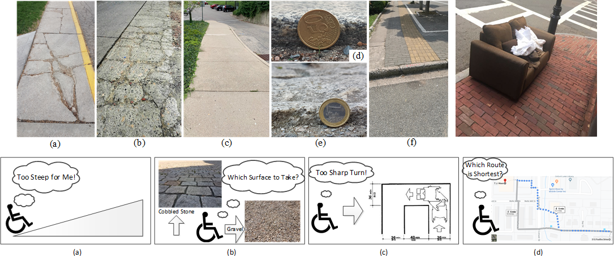
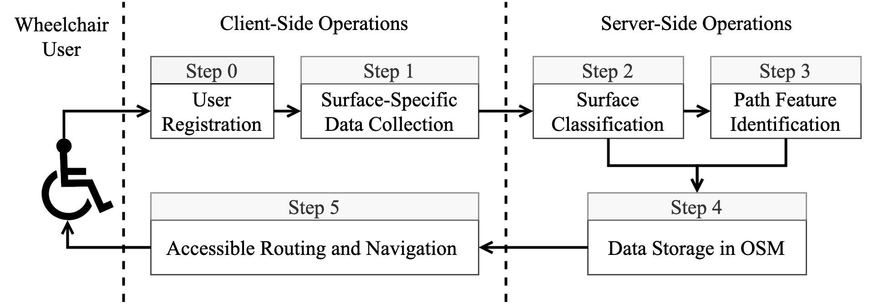

Access Anywhere, Together
MyPath is an AI-powered accessible navigation system that provides personalized, barrier-aware routes for wheelchair users using geospatial data fusion and language models.
Our Vision
MyPath's vision is to provide users with customized paths between destinations. The paths are ideally customized by taking the user's personal information into account. This allows the route provided to avoid certain barriers (i.e. fallen trees for users that may not be able to go over or around them), include specific facilities (i.e. curb cuts for wheelchair users), and avoid unsafe conditions (i.e. terrain that may be difficult for some users to physically navigate). MyPath hopes to crowdsource information to allow for a better algorithm and more real-time updates, allowing users more independence than they may have had in the past.
The Bigger Picture
We introduce the MyPath accessible routing system for wheelchair users which works by crowd-sourced surface vibration data collected by wheelchair users in an unobtrusive manner through the MyPath app. Our MyPath app is an accessible app by itself and is thoroughly verified by a team of wheelchair users, blind and low vision (BLV) users, and rehabilitation and mobility experts. The app has both Android and iOS versions and is tested for many hours for correct functioning. The MyPath system consists of three interconnected modules - data collection, ML-based surface classification, and accessible route generation.
Functionally, the operations of the system are divided into a training phase and a live phase. In the training phase, experiments are conducted both indoors and outdoors for curbs, flat paths, and other common surface types. The surface type and slope data are used for classification model training. The live phase consists of an unobtrusive, participatory crowd-sensing technique to collect location-tagged path information from urban areas in order to identify accessible features and recommend personalized routes in the built environment. In the training phase, a registered wheelchair user can contribute to data collection (step 0 and step 1) using a smartphone (Android or iOS) embedded with motion sensors. Collected data is subject to a surface classification operation in the central server using machine learning (step 2). Once data is accumulated from the user’s surroundings, the graphical overlay map is constructed with important path features (step 3) which helps to generate accessible routes (step 4) based on user-initiated queries (step 5). The accessible route query and response for the user can take place during the testing phase with enough data to populate the server.
MyPath Mobile App Tutorial
Learn How to Use MyPath
Watch this comprehensive tutorial to learn how to use the MyPath mobile application effectively. Discover all the features, navigation options, and accessibility tools that make your journey easier.
- Finding barrier-aware routes
- Setting up your accessibility preferences
- Reporting accessibility issues
Tutorial Videos
Navigation Tutorial
Learn how to navigate using MyPath's barrier-aware routing system and voice guidance features.
Data Collection Tutorial
Discover how to contribute valuable accessibility data during your daily activities using the MyPath app.
Barrier Report Tutorial
Learn how to report accessibility barriers and help improve navigation for the wheelchair community.
How do I sign up?
Please check if you are eligible to participate in our research study.
What do I have to do?
If you are eligible to be a participant, you will be taking the following steps:
Complete the necessary surveys
Fill out initial questionnaires about your mobility needs and navigation challenges.
Download our MyPath App on your smartphone
Install the MyPath mobile application on your Android or iOS device.
Contribute data during daily activities
Use our app during outdoor, wheeled mobile activities to help improve navigation technology.